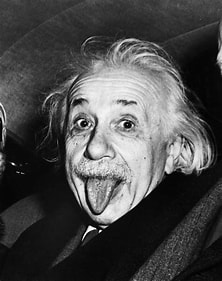
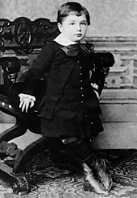
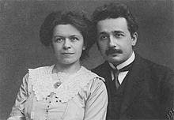

from his childhood interest in science to his work as a patent clerk to his
collaboration with other scientists, contributed to his groundbreaking work in physics
and his legacy as one of the most important scientists of the 20th century.
Nuclear weapons: Einstein was concerned about the potential for nuclear weapons and wrote a letter to President Roosevelt in 1939 urging him to start a nuclear research program. He later regretted this decision and became an advocate for nuclear disarmament.
Playing the violin: Einstein was a passionate violinist and often played music with friends and family. He
was a big fan of the music of Mozart and Bach.
Sailing: Einstein enjoyed sailing and often went on trips with friends and colleagues. He once said that
sailing helped him clear his mind and think through problems.
Traveling: Einstein loved to travel and visited many countries throughout his life. He often spoke about how
travel helped him gain new perspectives and insights.
Reading: Einstein was an avid reader and had a large personal library. He read widely in philosophy,
literature, and science.

